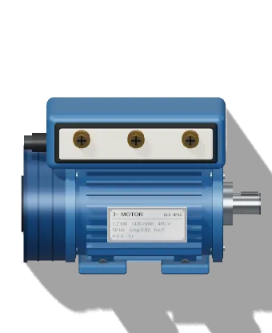

أساسيات الكهرباء · الدرس 6 من 13
هناك كهرباء مستمرة DC مثل البطارية، وكهرباء مترددة AC مثل كهرباء المنزل. وكهرباء الشبكة نفسها إما أحادية الفاز وإما ثلاثية الفاز. وفي النهاية ستحفظ ألوان الأسلاك لتعرف كل سلك دون تخمين.
DC (التيار المستمر) يسير في اتجاه واحد وجهده ثابت، وله موجب وسالب. مثل بطارية 1.5V، وبطارية السيارة 12V، ودوائر التحكم في اللوحات 24V.
AC (التيار المتردد) يعكس اتجاهه 50 مرة في الثانية (50Hz). وهو كهرباء المنزل 220V والمصنع 380V.
كهرباء المنازل AC لأن المحوّل يرفع جهده ويخفضه بسهولة، وهذا ما يجعله يُنقل مسافات طويلة.
إذا رسمت الجهد مع الزمن: الـ DC خط مستقيم، والـ AC موجة تصعد وتهبط. شاهدهما على الشاشة:
ولأن جهد الـ AC يتغيّر طوال الوقت، يقرأ جهاز القياس قيمة فعّالة اسمها RMS، وهي الـ 220V. أما قمة الموجة فأعلى: 220 × 1.414 = 311V.
أحادي الفاز (Single Phase) للمنازل: سلك فاز L وسلك نيوترال N وأرضي PE، والجهد بين L و N يساوي 220V.
ثلاثي الفاز (Three Phase) للمصانع: 3 فازات L1 L2 L3 مع النيوترال والأرضي. بين أي فازين 380V، وبين أي فاز والنيوترال 220V.

ثلاثي الفاز (المصانع)L1 L2 L3 + N + PEالعمارة يدخلها 3 فازات، وكل شقة تأخذ فازًا واحدًا. لذلك قد تكون الكهرباء موجودة عند جارك ومقطوعة عندك.
المواصفة IEC تحدّد لونًا لكل سلك: البني للفاز (L أو L1)، والأسود لـ L2، والرمادي لـ L3، والأزرق للنيوترال N، والأخضر × الأصفر للأرضي PE فقط.
لا تعتمد على اللون وحده. المنازل القديمة ألوانها غير منتظمة: تأكّد بمفك الاختبار أو الأفوميتر.
8 أسلاك. تحتاج إلى 7 إجابات صحيحة على الأقل.
إذا لمس سلك الفاز جسم جهاز معدني من الداخل صار الجسم كله مكهربًا. دون أرضي لا يعرف أحد حتى يلمسه شخص. ومع الأرضي يجد التيار مسارًا سهلًا يمرّ فيه، فيفصل القاطع فورًا.
لذلك كل جهاز جسمه معدني (غسالة، سخان، ثلاجة) يجب توصيله بالأرضي.
ألوان الأسلاك بحسب IEC 60445. الكود المحلي والمباني القديمة قد يختلفان، فتأكّد دائمًا بالقياس. تقدّمك يُحفظ في حسابك.
© 2026 LearnElectricals. كل الحقوق محفوظة. الموقع غير تابع لأي من الشركات المذكورة (مثل Siemens و Allen-Bradley و Delta و Schneider وغيرها)، والأسماء والعلامات التجارية ملك لأصحابها، ومستخدمة لشرح الأجهزة فقط.